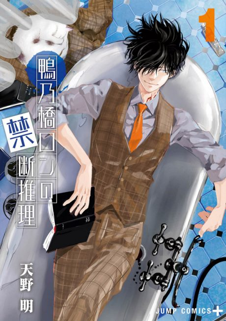

Manga continues fromCh. 69
Anime
Manga continues fromCh. 69
Anime
MangaRon Kamonohashi's Forbidden Deductions
鴨乃橋ロンの禁断推理
AniList7.4
Animeter—
2 seasons26 ep
MangaCh. 69
Anime finished. Where does the manga pick up?
Start at Chapter69
Season 1 covers chapters 1-34 and Season 2 covers chapters 35-68, so start at chapter 69. The manga is finished at 170 chapters.
13468170 end
Season 1Season 2Start reading here
More like Ron Kamonohashi's Forbidden Deductions
 Original8.6
Original8.6
 Original7.4
Original7.4
 Manga Vol. 27.7
Manga Vol. 27.7
 Original7.8
Original7.8
 Original8.1
Original8.1
 Manga Ch. 1088.4
Manga Ch. 1088.4